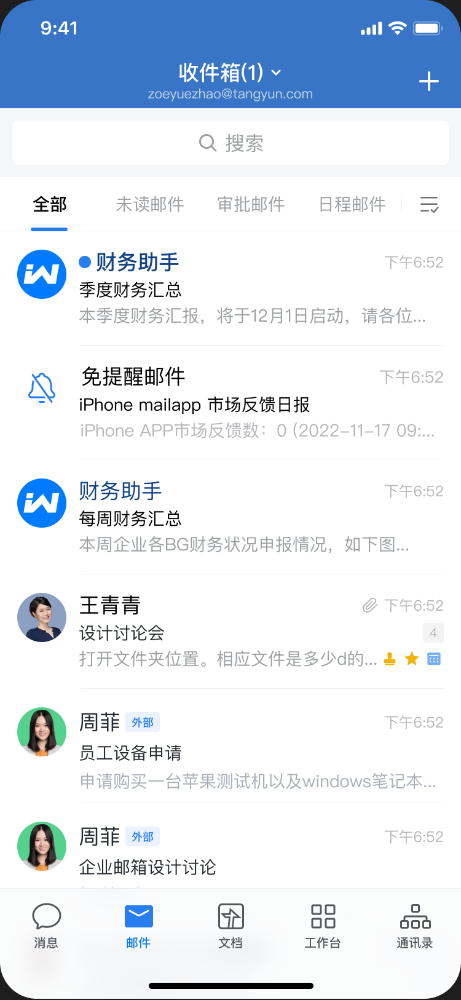

目录
接口发送邮件表现配置可使用邮件的应用注意事项企业和开发者通过邮件接口可以便捷地发送邮件，用于企业内通知公告等场景，调用接口的应用自动成为发件人。也可以通过接口发送日程邮件和会议邮件，同步创建日程及会议。
接口发送邮件表现
- 应用获得邮件权限时，系统会自动分配给应用一个应用邮箱账号，默认以应用名称的拼音为前缀，以在企业微信邮件中的域名为后缀。应用发送邮件时，会以应用邮箱账号作为发件人。应用可以调用接口查询和更新应用邮箱账号。
- 应用通过接口发送邮件，企业微信客户端会高亮出应用名称，重要通知不易遗漏。

配置可使用邮件的应用
应用在调用邮件接口前，需要先获得邮件的使用权限。
- 自建应用：管理员登录企业微信管理端，进入「协作」-「邮件」，配置「可调用接口的应用」。
- 第三方应用：第三方服务商创建应用时，需要开启「邮件接口权限」。企业授权应用之后，应用即拥有邮件权限。
- 代开发应用：服务商为企业配置代开发应用时，需要开启「邮件接口权限」，企业管理员确认之后，应用即拥有邮件权限。
注意事项